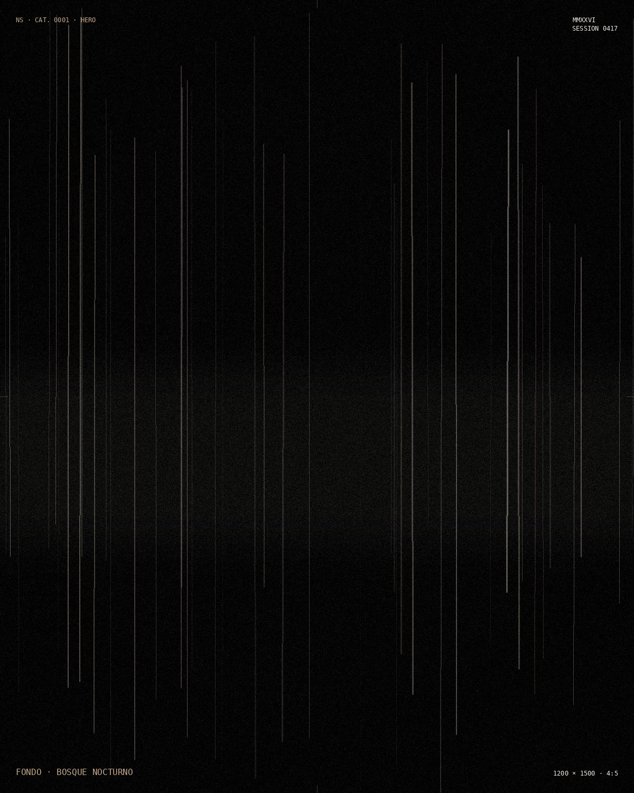

STATUS: STANDBY
NS · MMXXVI
SESSION 0417
SESSION 0417

Human Reconnection Index
NatureScore™
15 sensores humanos · 8 señales medidas · 1 diagnóstico
El sistema te desconectó, pieza por pieza.
Esto mide cuánto te queda conectado.
UBICACIÓN: NO RASTREADA
v1.0 — DEMO
STATUS: EN ESPERA DE CONSENTIMIENTO
NS · MMXXVI
SESSION 0417
SESSION 0417
Antes de continuar
- Este test no mide inteligencia.
- Mide presencia, cuerpo, silencio.
- Y te deja un espacio para decir lo tuyo.
- Tus respuestas no serán usadas para mejorar tu humanidad. Todavía.
Lectura express. 8 señales críticas. Sin vuelta atrás.
UBICACIÓN: NO RASTREADA
v1.0 — DEMO
STATUS: CALIBRANDO
NS · MMXXVI
SESSION 0417
SESSION 0417
Human Sensors
El sistema reconoce quince sensores humanos. Hoy vamos a leer ocho señales críticas. El resto queda resonando.
No son habilidades nuevas. Son memorias antiguas que el sistema dejó en segundo plano.
UBICACIÓN: NO RASTREADA
v1.0 — DEMO
EVALUACIÓN EN CURSO
SENSOR 01 / 08
01 / 08
NATURALEZA
—
Procesando
LECTURA EN CURSO
DIAGNÓSTICO COMPLETO
NS · MMXXVI
SESSION 0417
SESSION 0417
NatureScore
0/100
—
— —
—
—
Por si te sirve, sin obligación
No es una lista de tareas. Son ideas sueltas, por si alguna resuena.
UBICACIÓN: NO RASTREADA
· · ·